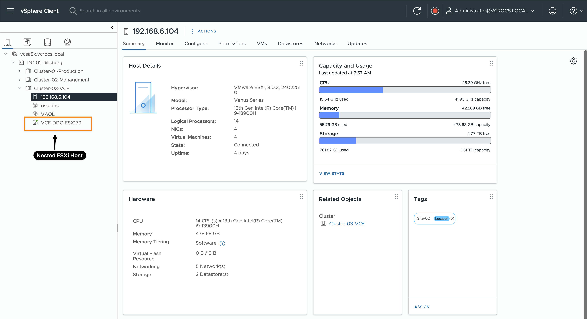
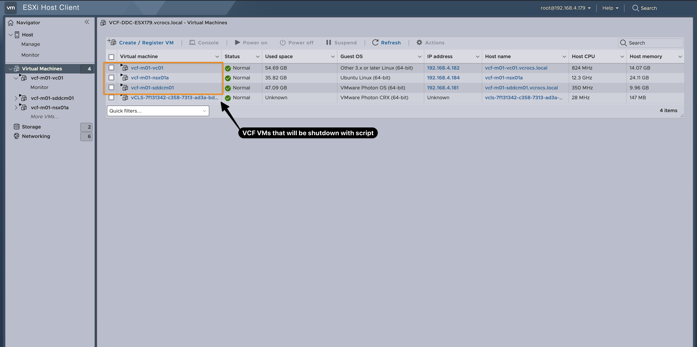

PowerCLI on Mac, Linux, and Windows
Home Lab Automation!
The real power of innovation comes not from the tools we use, but from the mindset we bring. Think outside the box, and any type of computer can become the key to endless possibilities.
Let's get Started:
Ready to dive into automation? Excellent choice!
Planning to automate on a Mac, Linux, or Windows? Fantastic!
I love that VMware PowerCLI is built as a PowerShell module, making automation seamless across Mac, Linux, and Windows. Since VMware is my primary focus for automation, PowerShell is my go-to tool—thanks to PowerCLI. So far in my Automation journey, there hasn’t been a process I couldn’t automate with PowerShell.
For 2025, I’ve been invited to be a VMware Community {code} Coach! This year, my blogs will feature even more code examples to help others get started with automation, VMware solutions, and much more...
In my home lab, I needed a quick and easy way to power on and off my VMs. Some VMs I want to shut down every evening and start up again each morning—not just to save electricity, but also to give my MS-01s a bit of a break. In this blog, I’ll share the scripts I created to automate this process.
I have a VCF environment running in my lab on a nested ESXi host, (See my Blog to create an VCF in your lab with a script). My goal is to log into the ESXi host, gracefully shut down all VCF VMs, then log into vCenter to shut down the nested ESXi host. To ensure a clean shutdown, I’ve added logic to verify that all VMs are powered off before proceeding to the next steps. In this blog, I’ll share the code I use to automate this process.
--
Code Examples:
Script to Shutdown my VCF VMs:
###
# PowerShell Script for Shutting Down VMs
# Author: Dale Hassinger
# Description: This script shuts down specific VMs on an ESXi host and vCenter.
# It also ensures proper logging and handles connections cleanly.
###
# ------------ Configuration Section ------------
# ESXi connection parameters
$ESXiHost = "192.168.4.179"
$ESXiUser = "root"
$ESXiPassword = "VMware1!"
# vCenter connection parameters
$vCenterServer = "192.168.6.100"
$vCenterUser = "administrator@vcrocs.local"
$vCenterPassword = "VMware1!"
# Log file location
$logFile = "/home/administrator/power-off.log"
# VMs to shut down on ESXi
$VMsToShutdown = @("vcf-m01-sddcm01", "vcf-m01-vc01", "vcf-m01-nsx01a")
# VM to shut down on vCenter (Nested ESXi)
$VMToShutdown = "VCF-DDC-ESX179"
# ------------ Log Function ------------
# Function to write log messages with timestamps
function Write-Log {
param (
[string]$Message
)
$LogDate = "[ " + (Get-Date).ToString("MM-dd-yyyy HH:mm:ss") + " ] - "
$Output = $LogDate + $Message
Write-Host $Output
Add-Content -Path $logFile -Value $Output
}
# ------------ Log File Setup ------------
# Remove existing log file if it exists
if (Test-Path $logFile) {
Remove-Item -Path $logFile -Force
}
# Create a new empty log file
New-Item -Path $logFile -ItemType File -Force | Out-Null
# ------------ Connect to vCenter ------------
Write-Log "Connecting to vCenter..."
$vCenterConnection = Connect-VIServer -Server $vCenterServer -User $vCenterUser -Password $vCenterPassword -Force -Protocol https
# Check if the nested ESXi host is running
Write-Log "Checking if nested ESXi Host $VMToShutdown is running..."
$vm = Get-VM -Name $VMToShutdown -ErrorAction SilentlyContinue
if ($vm -and $vm.PowerState -eq "PoweredOn") {
Write-Log "Host is running. Connecting..."
$vCenterConnection = Connect-VIServer -Server $ESXiHost -User $ESXiUser -Password $ESXiPassword -Force -Protocol https
Write-Log "Connected to Host $ESXiHost."
} else {
Write-Log "Host is not running. Exiting script."
Disconnect-VIServer -Server * -Confirm:$false
exit
}
# ------------ Shutdown VMs on ESXi ------------
foreach ($vmName in $VMsToShutdown) {
$vm = Get-VM -Name $vmName -ErrorAction SilentlyContinue
if ($vm -and $vm.PowerState -eq "PoweredOn") {
Write-Log "Shutting down VM: $vmName"
$shutdownVM = Shutdown-VMGuest -VM $vm -Confirm:$false
# Wait for VM to fully shut down
Write-Log "Waiting for VM $vmName to fully shut down..."
do {
Start-Sleep -Seconds 5
$vm = Get-VM -Name $vmName -ErrorAction SilentlyContinue
} while ($vm -and $vm.PowerState -ne "PoweredOff")
Write-Log "VM $vmName is now fully shut down."
} else {
Write-Log "VM $vmName is already powered off or not found."
}
}
# Disconnect from ESXi host
Write-Log "Disconnecting from ESXi host..."
Disconnect-VIServer -Server $ESXiHost -Confirm:$false
Write-Log "Disconnected from ESXi host."
# ------------ Shutdown Nested Host on vCenter ------------
Write-Log "Shutting down VM: $VMToShutdown on vCenter"
$vm = Get-VM -Name $VMToShutdown -ErrorAction SilentlyContinue
if ($vm -and $vm.PowerState -eq "PoweredOn") {
$shutdownVM = Shutdown-VMGuest -VM $vm -Confirm:$false
# Wait for VM to fully shut down
Write-Log "Waiting for VM $VMToShutdown to fully shut down..."
do {
Start-Sleep -Seconds 5
$vm = Get-VM -Name $VMToShutdown -ErrorAction SilentlyContinue
} while ($vm -and $vm.PowerState -ne "PoweredOff")
Write-Log "VM $VMToShutdown is now fully shut down."
} else {
Write-Log "VM $VMToShutdown is already powered off or not found."
}
# ------------ Cleanup and Disconnect --------------------
Write-Log "Disconnecting from vCenter..."
Disconnect-VIServer -Server * -Confirm:$false
Write-Log "Disconnected from vCenter."
Write-Log "Script execution completed."
Script to PowerOn my VCF VMs:
###
# PowerShell Script for Powering On VMs
# Author: Dale Hassinger
# Description: This script starts specific VMs on an ESXi host and vCenter.
# It also ensures proper logging and handles connections cleanly.
###
# ------------ Configuration Section ------------
# vCenter connection parameters
$vCenterServer = "192.168.6.100"
$vCenterUser = "administrator@vcrocs.local"
$vCenterPassword = "VMware1!"
# ESXi connection parameters
$ESXiHost = "192.168.4.179"
$ESXiUser = "root"
$ESXiPassword = "VMware1!"
# Log file location
$logFile = "/home/administrator/power-on.log"
# VMs to start on ESXi
$VMsToStart = @("vcf-m01-sddcm01", "vcf-m01-vc01", "vcf-m01-nsx01a")
# VM to start on vCenter
$VMToStart = "VCF-DDC-ESX179"
# ------------ Log Function ------------
# Function to write log messages with timestamps
function Write-Log {
param (
[string]$Message
)
$LogDate = "[ " + (Get-Date).ToString("MM-dd-yyyy HH:mm:ss") + " ] - "
$Output = $LogDate + $Message
Write-Host $Output
Add-Content -Path $logFile -Value $Output
}
# ------------ Log File Setup ------------
# Remove existing log file if it exists
if (Test-Path $logFile) {
Remove-Item -Path $logFile -Force
}
# Create a new empty log file
New-Item -Path $logFile -ItemType File -Force | Out-Null
# ------------ Connect to vCenter ------------
Write-Log "Connecting to vCenter..."
$vcenterConnection = Connect-VIServer -Server $vCenterServer -User $vCenterUser -Password $vCenterPassword -Force -Protocol https
# Check if VM is powered off before starting
$vm = Get-VM -Name $VMToStart -ErrorAction SilentlyContinue
if ($vm -and $vm.PowerState -ne "PoweredOn") {
Write-Log "Starting VM: $VMToStart"
$startVM = Start-VM -VM $VMToStart -Confirm:$false
# Wait for VM to be fully powered on
Write-Log "Waiting for VM to fully power on..."
do {
Start-Sleep -Seconds 5
$vm = Get-VM -Name $VMToStart -ErrorAction SilentlyContinue
} while ($vm -and $vm.PowerState -ne "PoweredOn")
Write-Log "VM $VMToStart is now fully powered on."
} else {
Write-Log "VM $VMToStart is already powered on or not found."
}
# Disconnect from vCenter
Write-Log "Disconnecting from vCenter..."
Disconnect-VIServer -Server * -Confirm:$false
Write-Log "Disconnected from vCenter."
# Wait for Nested ESXi host to start
Write-Log "Waiting 2 minutes for Nested host to start..."
Start-Sleep -Seconds 120
# ------------ Connect to ESXi Host ------------
Write-Log "Connecting to ESXi host $ESXiHost..."
$vcenterConnection = Connect-VIServer -Server $ESXiHost -User $ESXiUser -Password $ESXiPassword -Force -Protocol https
Write-Log "Connected to ESXi host $ESXiHost."
# Start the VMs one at a time and wait until each is running before proceeding
foreach ($vmName in $VMsToStart) {
$vm = Get-VM -Name $vmName -ErrorAction SilentlyContinue
if ($vm -and $vm.PowerState -ne "PoweredOn") {
Write-Log "Starting VM: $vmName"
$startVM = Start-VM -VM $vmName -Confirm:$false
# Wait for VM to be fully powered on
Write-Log "Waiting for VM $vmName to fully power on..."
do {
Start-Sleep -Seconds 5
$vm = Get-VM -Name $vmName -ErrorAction SilentlyContinue
} while ($vm -and $vm.PowerState -ne "PoweredOn")
Write-Log "VM $vmName is now fully powered on."
} else {
Write-Log "VM $vmName is already powered on or not found."
}
}
# ------------ Cleanup and Disconnect ------------
Write-Log "Disconnecting from ESXi host..."
Disconnect-VIServer -Server $ESXiHost -Confirm:$false
Write-Log "Disconnected from ESXi host."
Write-Log "Script execution completed."
Screenshots:
A screenshot of the nested ESXi host within vCenter to illustrate what the script will power on and off:
A screenshot of the nested ESXi host VCF VMs to illustrate what the script will power on and off:

To automate tasks in my lab, I use a Rocky Linux VM with PowerShell installed. I’ve set up cron jobs to execute my PowerShell scripts on a schedule. Here are some details on how I configured these cron jobs to streamline automation.
A great resource for setting up cron jobs properly? ChatGPT! It’s a handy tool for troubleshooting and getting the syntax just right.
Proper format to run PowerShell Scripts with a cron job.
# Power On VCF Lab @ 5:00 am everyday
0 5 * * * /usr/bin/pwsh /home/administrator/power-on.ps1 >> /home/administrator/power-on.log 2>&1
# Power Off VCF Lab @ 11:59 pm everyday
59 11 * * * /usr/bin/pwsh /home/administrator/power-off.ps1 >> /home/administrator/power-off.log 2>&1
# cron format for day/time
* * * * * command_to_run
│ │ │ │ │
│ │ │ │ └── Day of the week (0-7, Sunday = 0 or 7)
│ │ │ └──── Month (1-12)
│ │ └────── Day of the month (1-31)
│ └──────── Hour (0-23)
└────────── Minute (0-59)
# edit cron jobs
crontab -e
# List cron jobs
crontab -l
# restart cron service
sudo systemctl restart crond
Examples of Cron Expressions
| Cron Expression | Meaning |
|---|---|
0 0 * | Runs at midnight every day |
0 12 1-5 | Runs at noon (12:00 PM) Monday to Friday |
/15 * | Runs every 15 minutes |
30 9 1 | Runs at 9:30 AM on the 1st day of every month |
0 18 5 | Runs at 6:00 PM every Friday |
0 3 1,3,5 | Runs at 3:00 AM on Monday, Wednesday, and Friday |
Lessons learned:
- Automating VM power on and off helps ensure consistency in your workflows.
- All the scripts in this blog were created and tested on a Mac using PowerShell.
- In the lab, the scripts are scheduled and executed on a Rocky Linux VM with PowerShell installed.
- Don’t dismiss PowerShell just because it was created by Microsoft. Embrace it to enhance your automation journey!
I created a Google NotebookLM Podcast based on the content of this blog. While it may not be entirely accurate, is any podcast ever 100% perfect, even when real people are speaking? Take a moment to listen and share your thoughts with me!
vCROCS Deep Dive Podcast | PowerCLI on Mac, Linux and Windows
In my blogs, I often emphasize that there are multiple methods to achieve the same objective. This article presents just one of the many ways you can tackle this task. I've shared what I believe to be an effective approach for this particular use case, but keep in mind that every organization and environment varies. There's no definitive right or wrong way to accomplish the tasks discussed in this article.
Always test new setups and processes, like those discussed in this blog, in a lab environment before implementing them in a production environment.